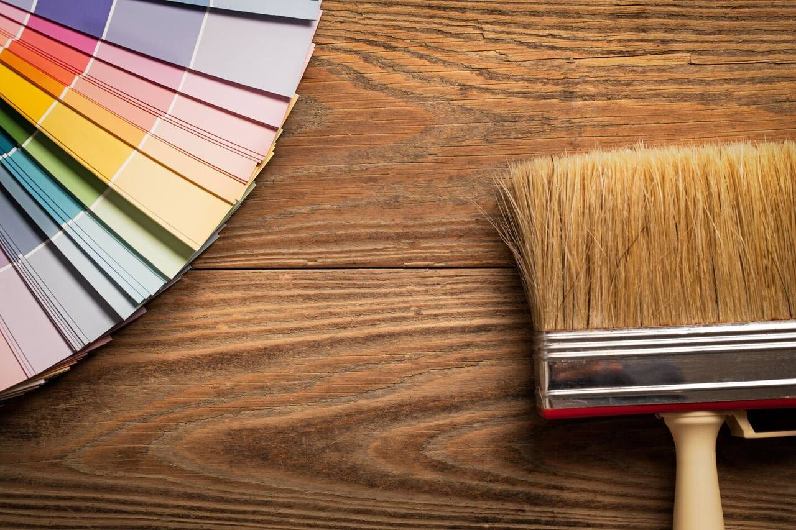
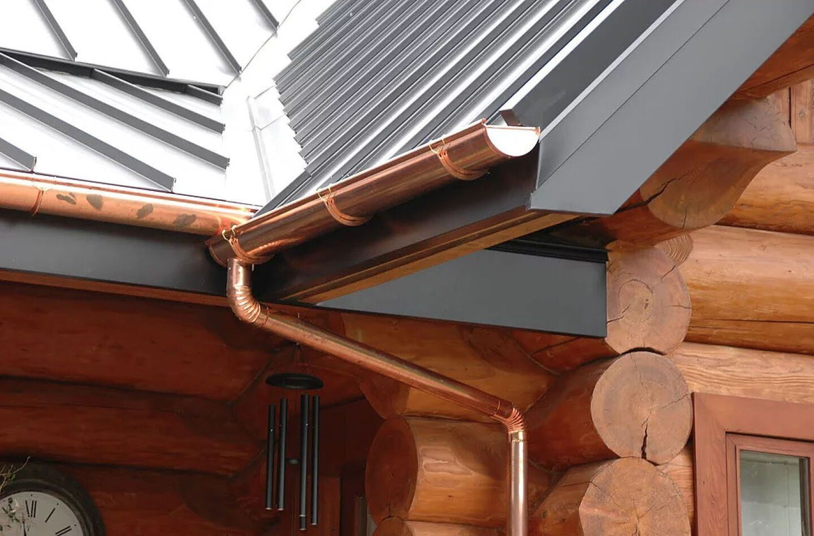

Vaktmester
Fast vaktmester, faste dager eller enkeltoppdrag. Til privat, næringsbygg og borettslag.
Alpha Service AS tar seg av hus og eiendom – fra fast vaktmestertjeneste til maling, mur og tømrerarbeid. Vi har godt innarbeidede rutiner og et solid fotfeste i bransjen.
Vi tilbyr et bredt og komplett spekter av hus- og eiendomsservice: drift, vedlikehold og renhold, malerarbeid, mur-, puss- og flisarbeid, tømrertjenester og vaktmestertjenester.
Fast vaktmester, faste dager eller enkeltoppdrag. Til privat, næringsbygg og borettslag.
Daglig tilsyn, renhold, lysrør, kosting og spyling, brøyting, gress og gartner.
Innvendig og utvendig malerarbeid, sparkling, tapetsering, fasadevask og sprøytemaling.
Mur- og pussarbeid og flislegging, utført med fokus på nøyaktighet.
Tømrerarbeid som del av oppdraget – eller som egen jobb.
Fast renhold eller periodisk, etter avtale og behov.

Alt av innvendig maling og tapetsering, samt utvendig rehabilitering av fasader og hus. Vi utfører hvert oppdrag med fokus på nøyaktighet og kvalitet.
Vi tror at den beste markedsføringen er fornøyde kunder. Nettopp derfor er kundens ønsker i fokus, uavhengig av type arbeid som skal utføres.
Vi er opptatt av kvalitet, og at det skal gjenspeiles i jobben vi utfører. God kvalitet sikrer deg som fornøyd kunde.
Godt innarbeidede rutiner og et solid fotfeste i bransjen – sammen med kontinuerlig utvikling.
Vi holder oss oppdatert på nye produkter og løsninger, og er godt kurset både innen HMS og produktutvikling.

Vi tilbyr et bredt og komplett spekter av tjenester fra idé til nøkkelferdig prosjekt, til privat- og industrimarkedet. Du trenger ikke koordinere flere fag selv.
Ring eller skriv, og fortell hva som trengs.
Befaring og et tilbud som er til å forstå.
Etter avtalt plan, med egne folk og faste samarbeidspartnere.
Vi rydder, dokumenterer og tar ansvar etter at jobben er levert.
Ring oss eller send en melding. Vi tar en prat om hva som trengs – og gir et tilbud som er til å forstå.